Linux¶
This quickstart will help you set up your Linux machine to explore the sourcecode of Bonsai or develop and debug your blender scripts in VSCode. This has the benefit of having a complete development environment where you can explore the code, make changes, debug (break-points, watch variable and stack contents, etc. ) and see the results in blender
Steps 1-6 will get you started with VSCode to develop and debug python scripts in Blender.
Steps 7-14 will allow you to interact with GitHub to make changes to the Bonsai project.
Step 15 will allow you to download someone else’s pull request and test it in your local machine.
We will be using AlmaLinux 9 as our operating system and Visual Studio Code as our Integrated Development Environment (IDE) and we will create a dedicated user for Development.
Create Development User: Open up a terminal (typically hitting “Windows” key and writing “terminal” in the search field)
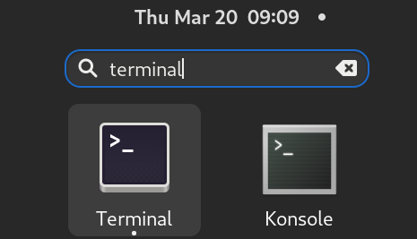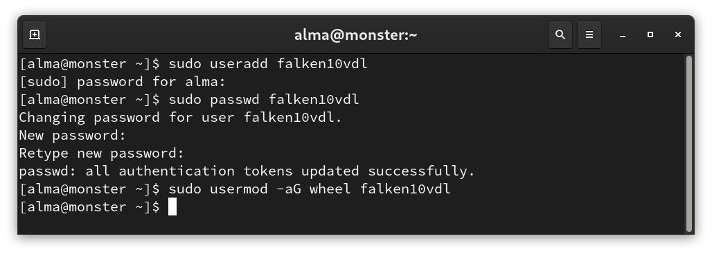sudo useradd falken10vdl sudo passwd falken10vdl sudo usermod -aG wheel falken10vdl
Tip
If for some reason you need to delete the user, you can use the following command:
sudo userdel -r falken10vdl
Install Blender for the created user: We will install blender locally in the users home directory. We must check that we are following the Systems requirements.
We will download Blender 4.2 from the Blender download page. In particular, we take the 4.2 LTS for Linux.
We will download the Linux 64 bit version:
https://www.blender.org/download/release/Blender4.2/blender-4.2.8-linux-x64.tar.xz
wget https://download.blender.org/release/Blender4.2/blender-4.2.8-linux-x64.tar.xz tar -xvf blender-4.2.8-linux-x64.tar.xz mv blender-4.2.8-linux-x64 /home/falken10vdl/.local/share/applications/blender-4.2.8-linux-x64
Warning
If the directory /home/falken10vdl/.local/bin/ does not exist, we will create it.
mkdir -p /home/falken10vdl/.local/bin/
We will create a symbolic link to the blender executable in the bin directory and we will also modify the blender.desktop file to open in a terminal and to have a custom icon.
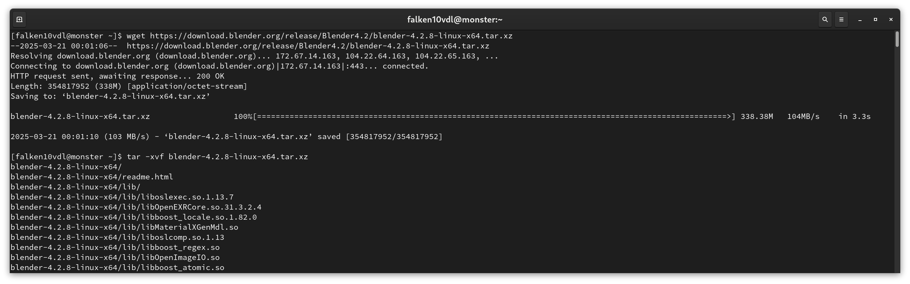 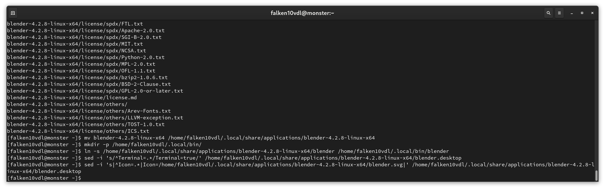ln -s /home/falken10vdl/.local/share/applications/blender-4.2.8-linux-x64/blender /home/falken10vdl/.local/bin/blender sed -i 's/^Terminal=.*/Terminal=true/' /home/falken10vdl/.local/share/applications/blender-4.2.8-linux-x64/blender.desktop sed -i 's|^Icon=.*|Icon=/home/falken10vdl/.local/share/applications/blender-4.2.8-linux-x64/blender.svg|' /home/falken10vdl/.local/share/applications/blender-4.2.8-linux-x64/blender.desktop
CONGRATULATIONS! You have now Blender installed in your machine. You can launch it by typing blender in the terminal.
Now install the Bonsai Blender extension. Follow the Unstable installation.
Install VSCode: Log in as the new created user (falken10vdl in this example) and install Visual Studio Code.
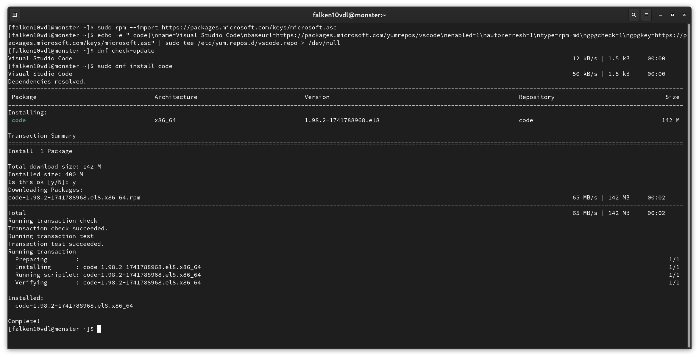sudo rpm --import https://packages.microsoft.com/keys/microsoft.asc echo -e "[code]\nname=Visual Studio Code\nbaseurl=https://packages.microsoft.com/yumrepos/vscode\nenabled=1\nautorefresh=1\ntype=rpm-md\ngpgcheck=1\ngpgkey=https://packages.microsoft.com/keys/microsoft.asc" | sudo tee /etc/yum.repos.d/vscode.repo > /dev/null dnf check-update sudo dnf install code # or code-insiders
Adjust Python version in VSCode as in Blender: Although not extrictly mandatory, this is a good practice step to ensure that the Python version in VSCode matches the one in Blender.
Check the Python version in Blender by going to . In the Python Console you can see the version number of the Python interpreter
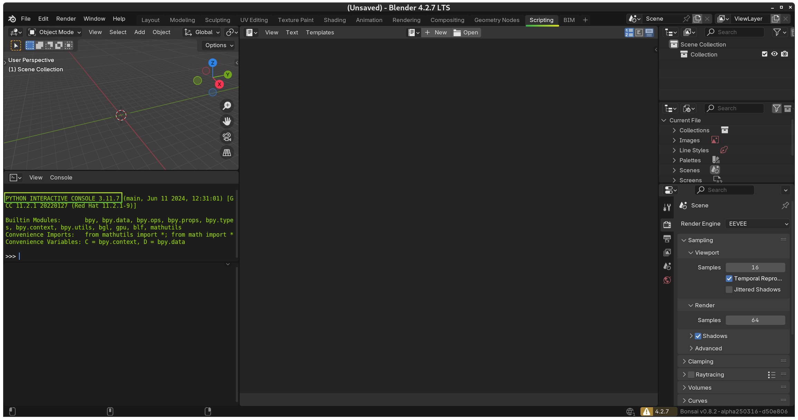In our case it is version 3.11.7
We will need to install the closest version in our Linux machine.
We check in Python Downloads.
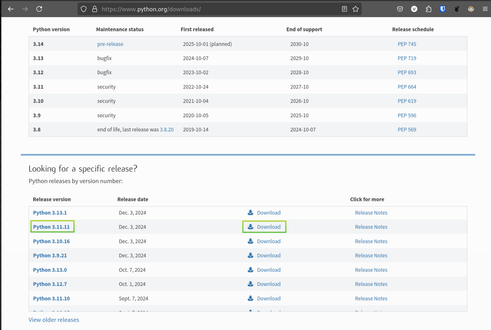The closest version is 3.11.11. So we download the Gzipped source tarball and install it.
We use the “altinstall” option to avoid overwriting the default Python version which could cause conflicts with the default installed version of the linux operating system.
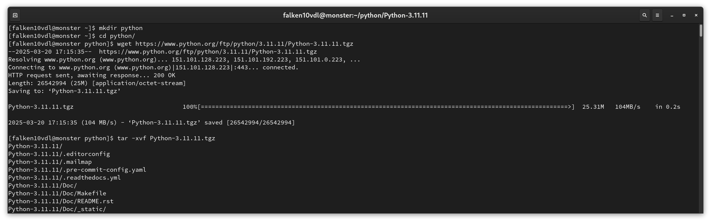 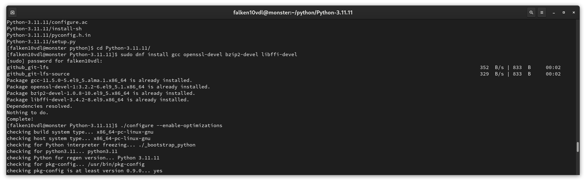 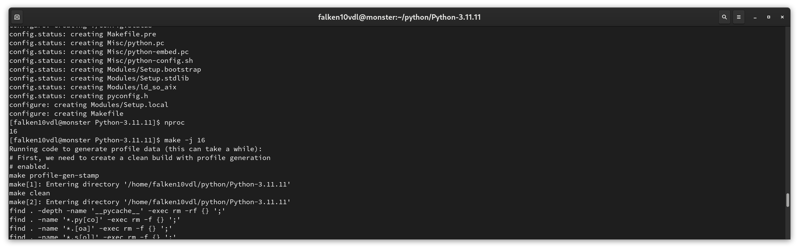 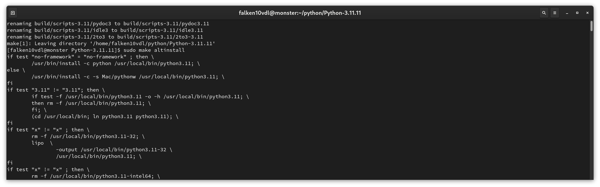 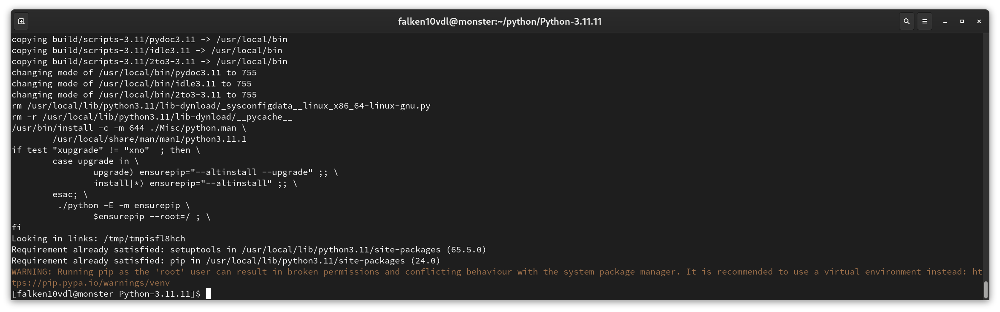wget https://www.python.org/ftp/python/3.11.11/Python-3.11.11.tgz tar -xvf Python-3.11.11.tgz cd Python-3.11.11 sudo dnf install gcc openssl-devel bzip2-devel libffi-devel ./configure --enable-optimizations nproc make -j 4 #adjust the value to the one provided by nproc sudo make altinstall
After this, we have the 3.11 python version installed in our machine. It is reachable by typing python3.11 in the terminal.
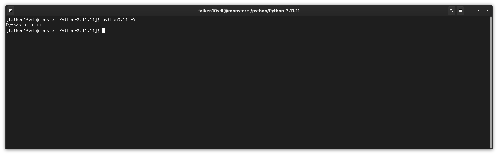python3.11 -VCONGRATULATIONS! You have now a Python version in VSCode similar to the one run by Blender.
Connect VSCode to Blender by means of VSCode’s extension: “Blender Development”: This steps is crucial to be able to develop and debug scripts in VSCode ans interactively see the results in Blender.
Launch VSCode and go to the Extensions tab, search for Blender Development and install it.
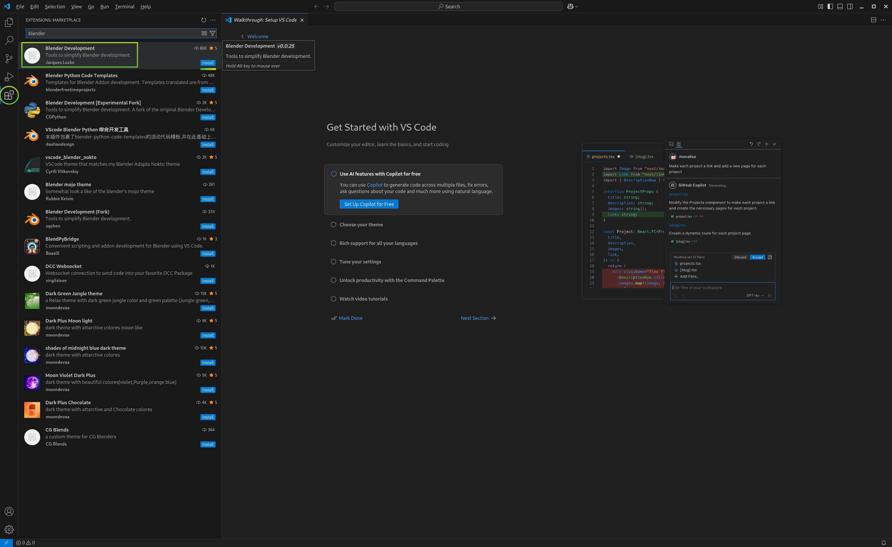This will also install some Python related extensions.
Finally create a sample python file and check the Python interpreter version in the bottom left corner.
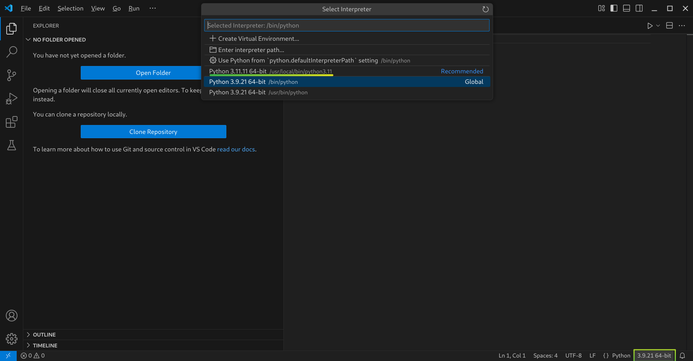
Test that you can develop python scripts in VSCode for Blender: Create a sample blender python file. you can use whatever blender python script you want. We will use this one from the blender documentation: Example Panel
import bpy class HelloWorldPanel(bpy.types.Panel): """Creates a Panel in the Object properties window""" bl_label = "Hello World Panel" bl_idname = "OBJECT_PT_hello" bl_space_type = 'PROPERTIES' bl_region_type = 'WINDOW' bl_context = "object" def draw(self, context): layout = self.layout obj = context.object row = layout.row() row.label(text="Hello world!", icon='WORLD_DATA') row = layout.row() row.label(text="Active object is: " + obj.name) row = layout.row() row.prop(obj, "name") row = layout.row() row.operator("mesh.primitive_cube_add") def register(): bpy.utils.register_class(HelloWorldPanel) def unregister(): bpy.utils.unregister_class(HelloWorldPanel) if __name__ == "__main__": print("Hello World: run from Blender Text Editor") else: print("Hello World: run from VSCode") print(f"NOTE. __name__ is : {__name__}") register()
Tip
Although blender has builtin the python modules for bpy, it is a good practice to install the “fake-bpy-module” in your local python environment. This will allow VSCode to provide autocompletion and other features. You can install it by running the following command in the VSCode terminal:
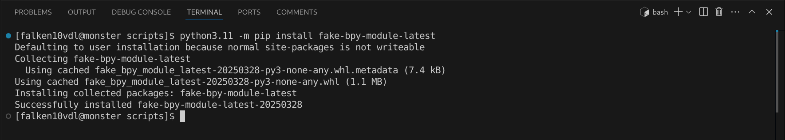python3.11 -m pip install fake-bpy-module-latest
We have changed the last part of the script since running from VSCode has some subtle differences compared to running from the Blender Text Editor. In particular the special variable __name__ is different.
Press CTRL-SHIFT-P and type “Blender: Start”. Blender will start.
Press CTRL-SHIFT-P and type “Blender: Run Script”. The script will run and the output will be seen in Blender!
As you can see below. We have set a break-point in line 37 (see point 13 below for another example of setting a break-point). We can inspect in the left side the local variables, global variables, add watches, check the stack, etc. For example we can see that __name__ has a valuee of “<run_path>” Instead of “__main__”.
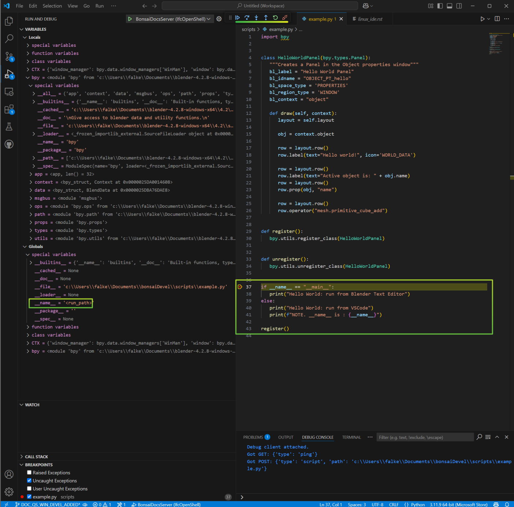Once we continue execution we can check in the VSCode Terminal the output and in Blender the panel created by the script.
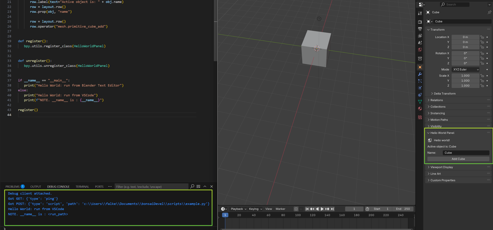CONGRATULATIONS! You have now a development environment ready to speedup your python scripting in Blender.
{kind=link}
{kind=link}
{kind=link}
{kind=link}
{kind=link}
{kind=link}
{kind=link}
{kind=link}
{kind=link}
{kind=link}
{kind=link}
{kind=link}
{kind=link}
{kind=link}
{kind=link}
{kind=link}
{kind=link}
{kind=link}
BONUS: Editing Bonsai Documentation: Please refer to Writing documentation for details on how to edit and contribute documentation. Here we just summarize the steps to integrate that workflow in VSCode and using Inkscape.
Download and install Inkscape from Inkscape download page. In our case we will use Inkscape 1.4 Linux AppImage.
Note
You might already have Inkscape in your Linux distribution or can install it from the distribution package manager. In that case you can skip this step.
The file below has the style annotation for the Bonsai documentation.
It contains some shapes and styles that you can use to create your own diagrams.
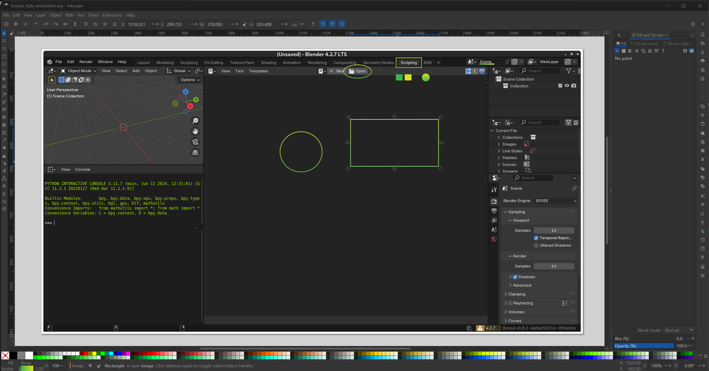Open some screenshot file you want to add annotations in Inkscape and also open this template. You can then copy paste from the temaplate to the screenshot file.
Warning
When copying the shapes for your convenience just make sure that you do not have selected the option “When scaling objects, scale the stroke width by the same proportion” to keep the style width right.
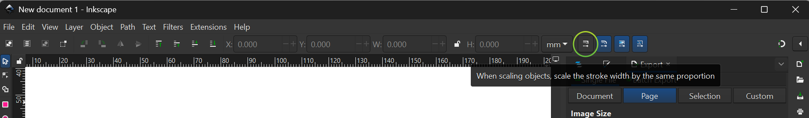Once done you can export your edited screenshot as PNG to be used in the docummentation. and click in the Export button on bottom right corner.
- As described in Writing documentation you need to have sphinx installed in your system.
You can simply run the following command in the terminal:
yum install python-sphinx
and then install the theme and theme dependencies:
python3.11 -m pip install furo python3.11 -m pip install sphinx-autoapi python3.11 -m pip install sphinx-copybutton
To speedup your workflow you can add the following VSCode files in the .vscode folder of your cloned repository. In our case it is /home/falken10vdl/bonsaiDevel/IfcOpenShell/.vscode
Make sure to edit them with the right paths in your system.
Now you can use the debug tool in VSCode to regenerate the html documentation by cliking the “Play” button BonsaiDocsServer (IfcOpenShell) in the top left corner of the debug tool.
- Once the server is started you can open a browser and go to the following URL:
http://localhost:8000/ and you will see the documentation.
In order to rebuild the documentation you need to stop the server and run the command again. You can do this by clicking in the “Abort” button in the bottom right corner of the debug tool.
CONGRATULATIONS! And happy documenting!
{kind=link}
{kind=link}
{kind=link}
{kind=link}
{kind=link}
{kind=link}
{kind=link}
Now let’s find out how to interact with GitHub in order to make changes to the Bonsai project.
Install GitHub related VSCode extensions: To facilitate the use of git commands and pulling and pushing files from a local repository towards github, please install as well the following VSCode extensions:
GitHub Pull Requests
GitHub Repositories
Remote Repositories
Optionaly you can also install Copilot extensions
GitHub Copilot
GitHub Copilot Chat
Fork IfcOpenShell project from GitHub: For this step you will need an account on GitHub. Once you have a registered account you can find it under https://github.com/YOURGITHUBUSERID In the example for falken10vdl the link is https://github.com/falken10vdl
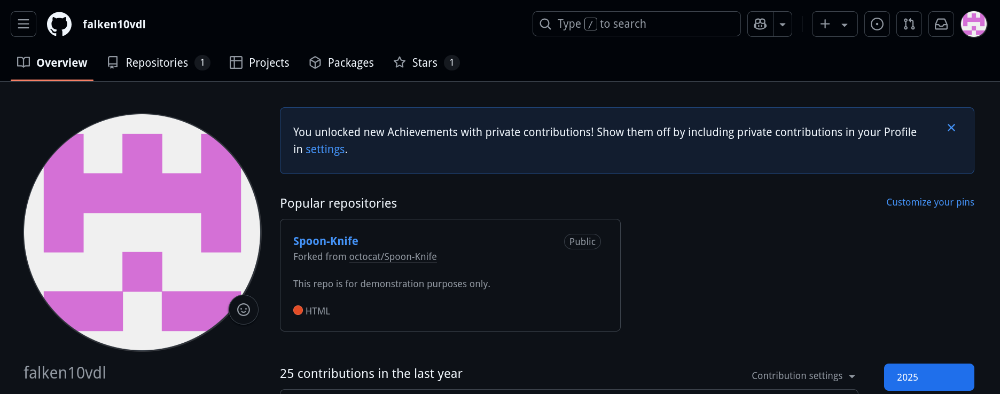Go to the IfcOpenShell GitHub page. And click on the Fork button. Please make sure that you are logged with your GitHub account as shown in the top right corner of the page.
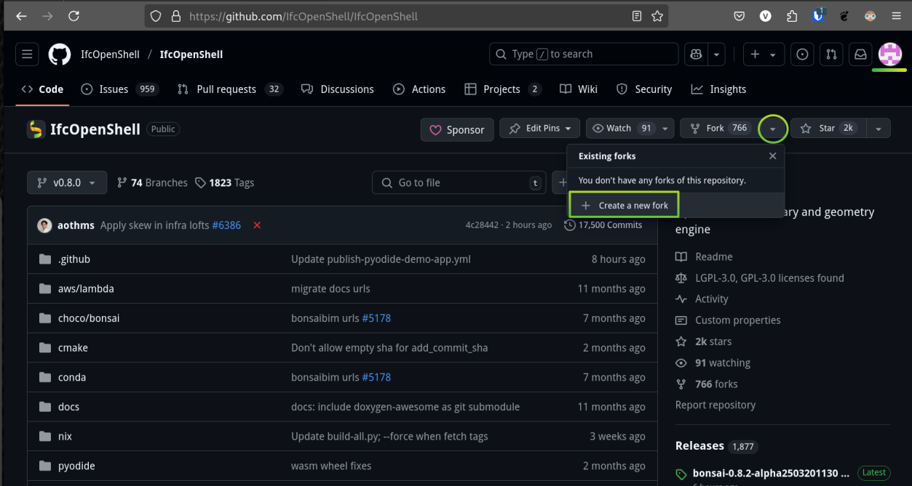Once the fork is generated you will be redirected to your own fork of the IfcOpenShell project.
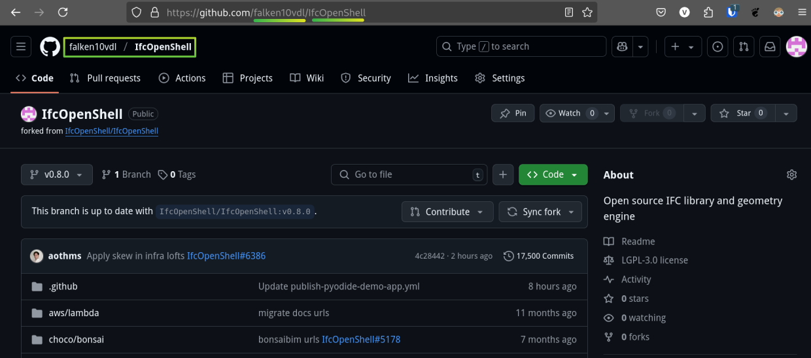Now we will clone the forked repository to our local machine.
Clone bonsai to our development environment: Launch VSCode Select the Source Control tool. Then and then select “Clone from GitHub”.
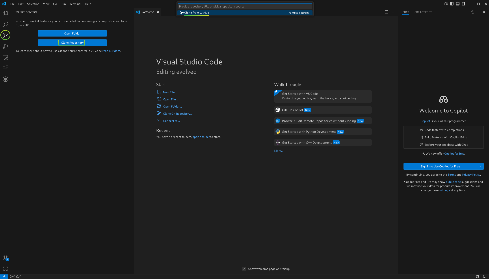A series of steps will be required to authenticate with GitHub. You will need to provide your GitHub credentials. Once VSCode has authenticated yourself in GitHub, you will be able to select the repository you want to clone. In this case we will clone the IfcOpenShell repository.
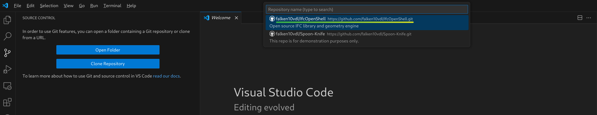VSCode will ask you to select a folder where the repository will be cloned. and it will start the cloning process.
Once finished, you will see the repository in the Explorer tool.
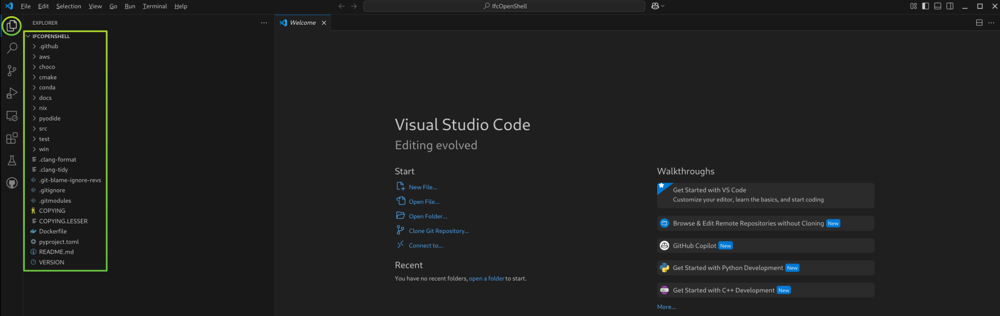Link the Bonsai addon to the local cloned repository: We will now edit the following script that establishes links from the unstable-installation to the cloned repository so we can easily see the changes done in the cloned repository taken effect when we load blender locally.
Edit the file to match the paths in your system. In our case we will edit the following lines:
REPO_PATH=”$HOME/bonsaiDevel/IfcOpenShell”
BLENDER_PATH=”$HOME/.config/blender/4.2”
PACKAGE_PATH=”${BLENDER_PATH}/extensions/.local/lib/python3.11/site-packages”
BONSAI_PATH=”${BLENDER_PATH}/extensions/raw_githubusercontent_com/bonsai”
We execute the script in the terminal. Confirm the data and the script will create the necessary links.
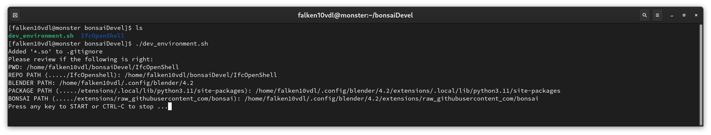 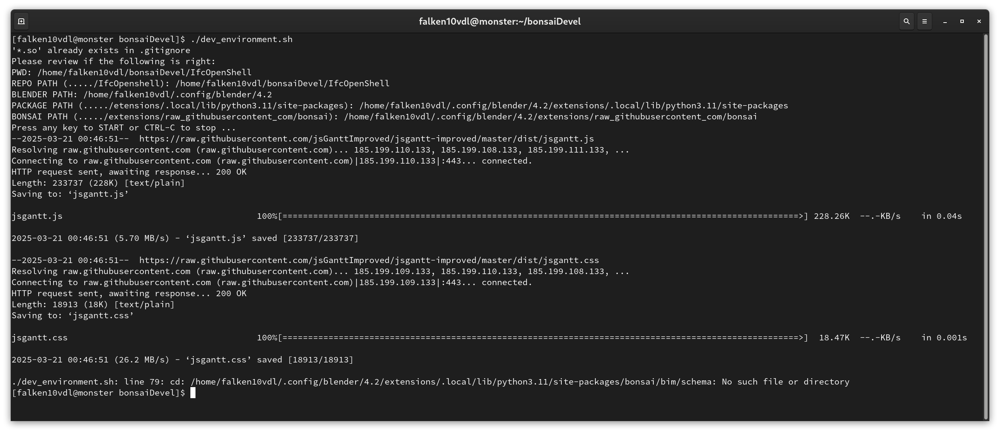./dev_environment.sh
Warning
If you receive an error like this:
cp: cannot stat '/home/falken10vdl/.config/blender/4.2/extensions/.local/lib/python3.11/site-packages/ifcopenshell/*_wrapper*': No such file or directory
It means that you have not installed the Bonsai Blender extension. Please refer to tha last part of point 2. above and follow the Unstable installation.
Adjust the VSCode Blender extension: We will now make some adjustments to the VSCode Blender extension to ease the reload of the addon. Select the Extensions tool. Then and then select .
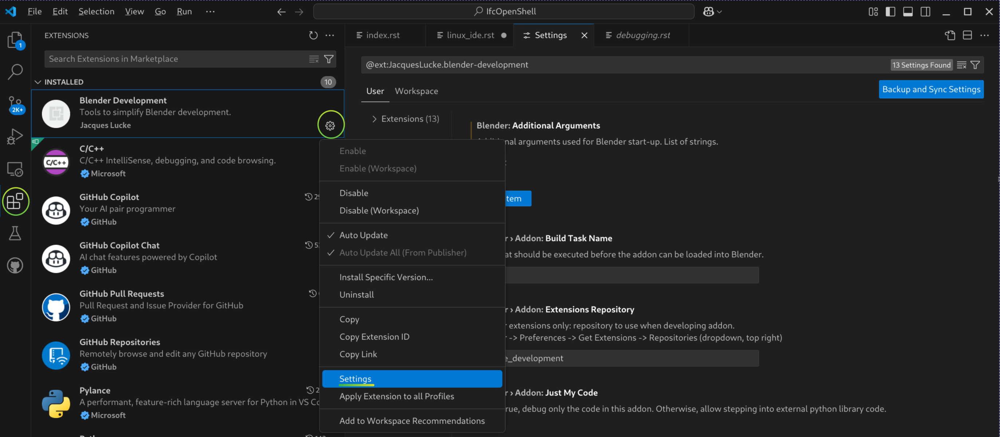Click twice in “Add Item” within the Blender: Additonal Arguments section and add the following two items (adapt Testing.ifc to the name of the IFC file you want to test during Bonsai development):
–python-expr
import bpy; import os; os.chdir(‘/home/falken10vdl’); bpy.ops.bim.load_project(filepath=’/home/falken10vdl/Documents/sampleIFC/Testing.ifc’, should_start_fresh_session=True, use_detailed_tooltip=True)
Make sure that Blender > Addon: Just My code is not selected (This allows to set the breakpoints anywhere in the source code).
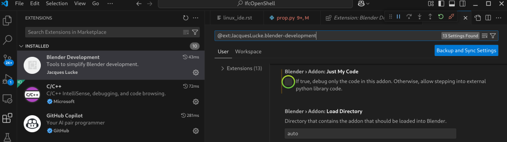Warning
This way to use the VSCode Blender extension is not the standard one. Refer to the VSCode Blender extension documentation for the standard way to use it. The reason behind is that this allows us to start VSCode in the top of the cloned repository so all the Git related funtionality in VSCode works properly and we have a complete view from VSCode tool of the whole repository.
Bonsai is a big project with a lot of dependencies so reloading it is not an easy task (see discussion in https://community.osarch.org/discussion/1650/vscode-and-jacquesluckes-blender-vscode/p1). We have taken the pragmatic approach to start blender with a specific file (Testing.ifc) and then we can reload the addon from the Blender UI which also upload automatically the changes in the addon and the testing file To summarize:
We need Blender > Addon: Just My code to get the breakpoint functionality even if the addon is not “registered/loaded” to the extension (due to the root folder we use)
We need Blender: Additonal Arguments to automatically load the Testing.ifc file when we start Blender from VSCode (We do not use Blender:Reload Addons since it does not work in our case)
Instead of restarting Blender from VSCode, we use the Blender UI that, as explainedin the next step, it provides a simple way to get the addon and the Testing file reloaded.
Launch blender from VSCode: We are now ready to launch Blender from VSCode. Open VSCode. Open the cloned repository if not already open. Press CTRL-SHIFT-P and type “Blender: Start”.
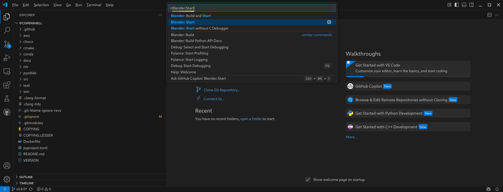Blender will start loading the Testing.ifc file. You can now start exploring the code and make changes to the addon!
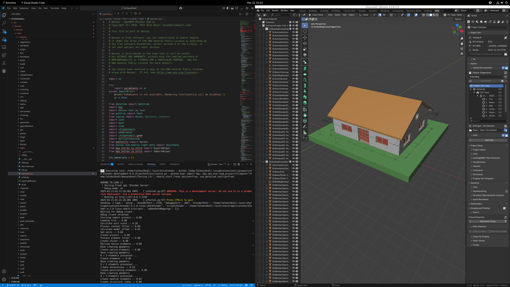In order to be able to restart blender (and reload the addons + reload the Testing file) we need to enable “Developer Extras” and also a good practice is to enable “Python Tooltips” in .
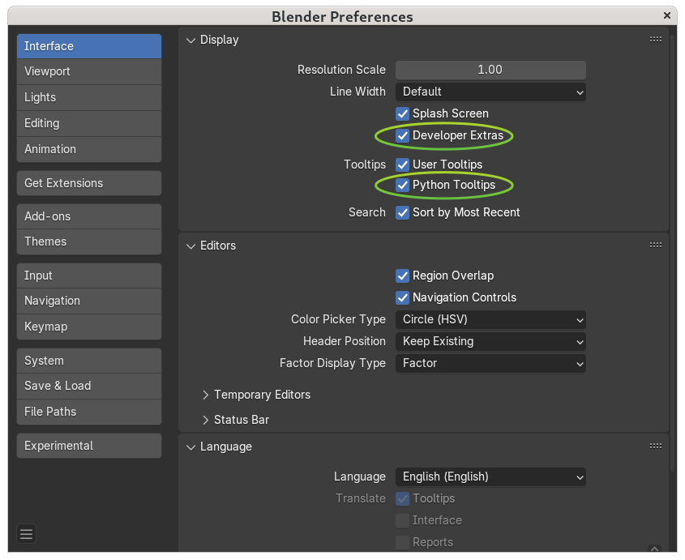Once these are enabled, you can press F3 and write “restart” to restart Blender.
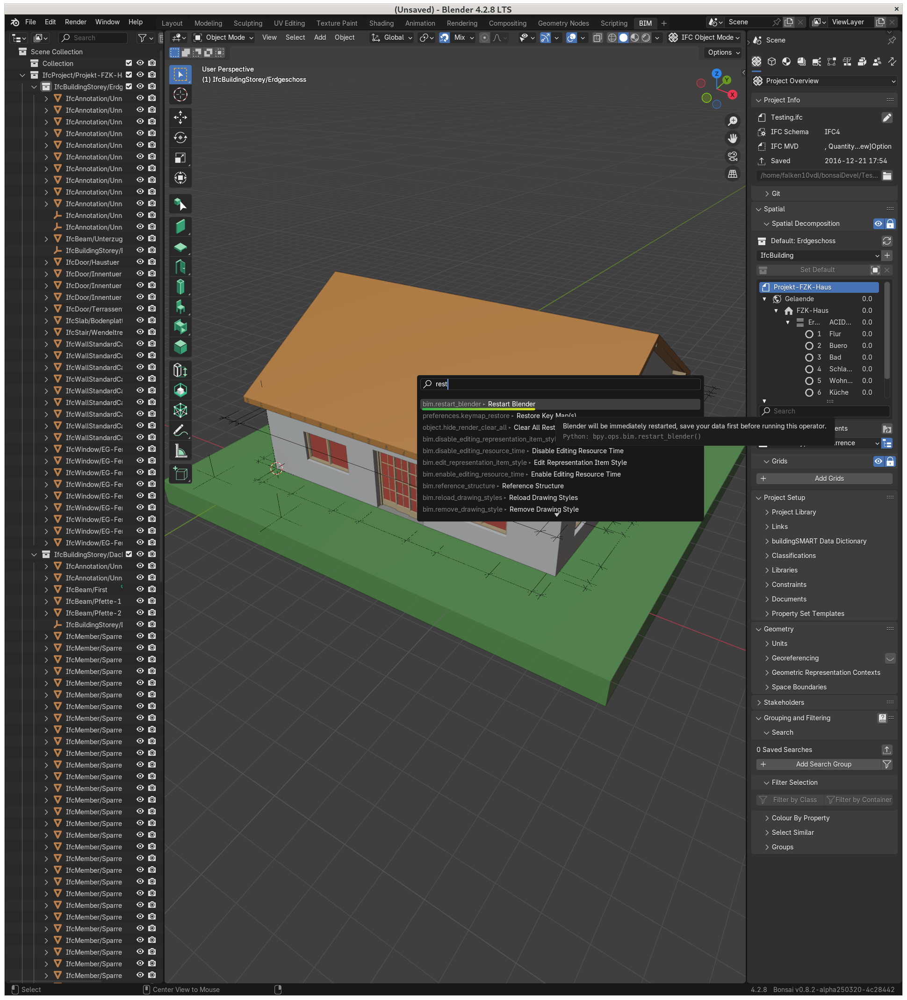Note
Once you enable “Developer Extras” you will see that you can right click in the UI and select “Source Code” to see the code behind the UI. For example in the image below you can right click in the “Generate SVG” and select “Edit Source”.
Then in the “Scripting” tab you can click and select a new editor windows that has been created (in this case it is called “uy.py”).
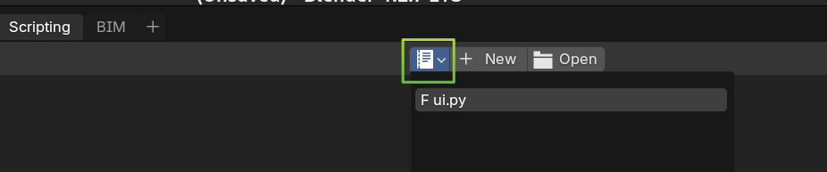If you select it, you will see the relevant code with a vertical blue line marking the exact point in the source code where the UI element is defined.
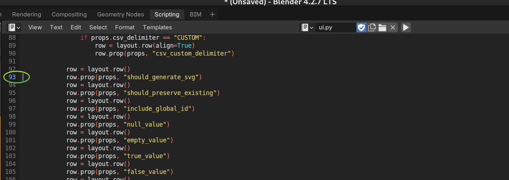From there it is quite usefull to search in VSCode to find the relevant file within the Bonsai source code. For that you can go to .
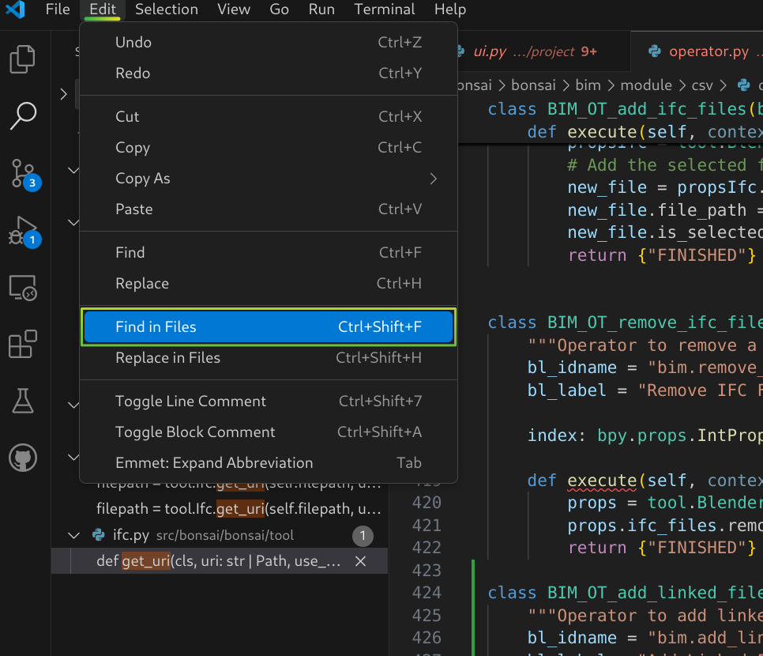Then you can click in the results to get the file opened in the editor.
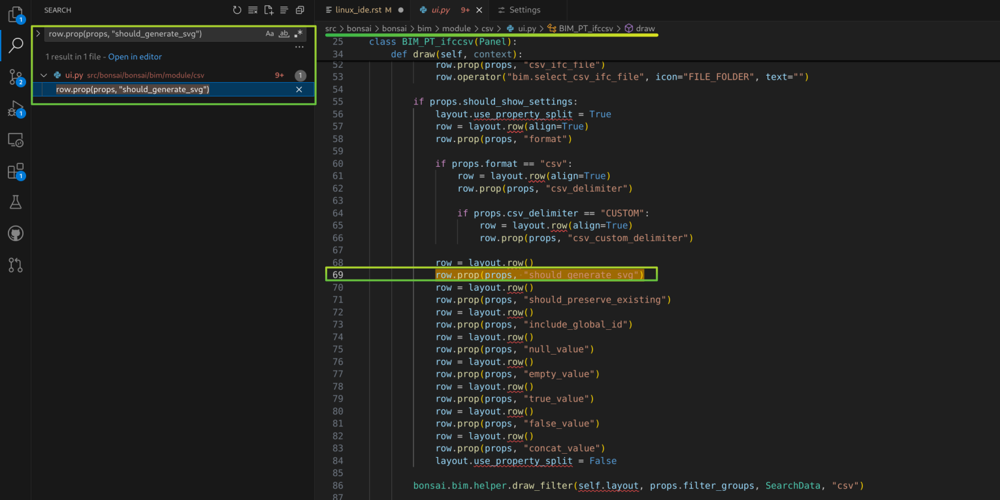Tip
Once you enable “developer Extras” you will be able to select in a number of options related to code development.
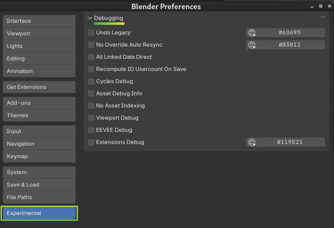In the case case of Bonsai. You have the TAB that also provides a number of tools to ease the development process.
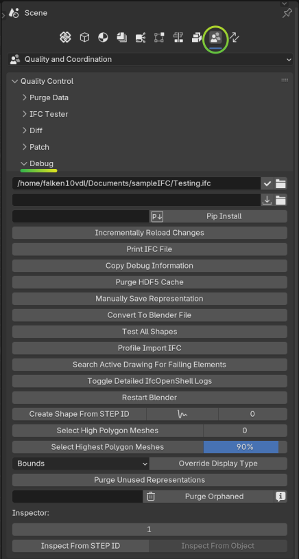Finally, there are a number of usefull Blender addons that can also help you in the development process. For example “Icon Viewer” or “Math vis”.
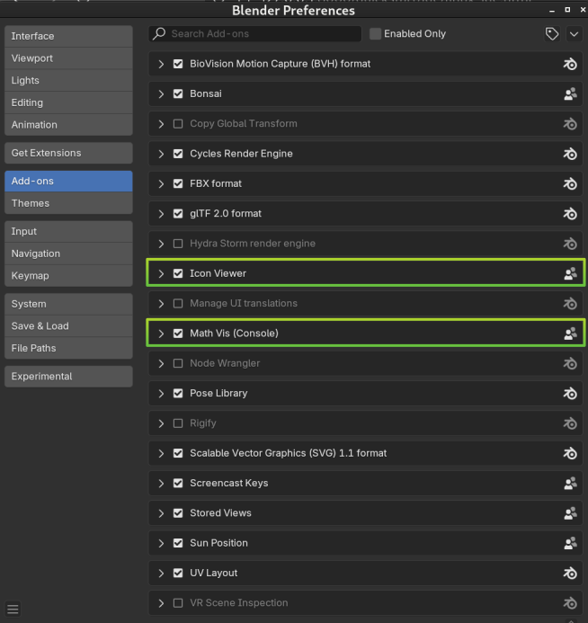Add a break-point: Let’s add a break-point in the code to see how it works. Press CTRL_SHIFT_P and type “Blender: Start”. Blender will start. Open the cloned folder and go to src > bonsai > bonsai > bim > module > light > prop.py and go to line 75. Add a line for a print statement and click on the left side of the line number to add a break-point.
74 def update_shadow_mode(self, context): 75 print("Shadow mode", self.shadow_mode) 76 if self.shadow_mode == "SHADING":
Set a break-point in line 75.
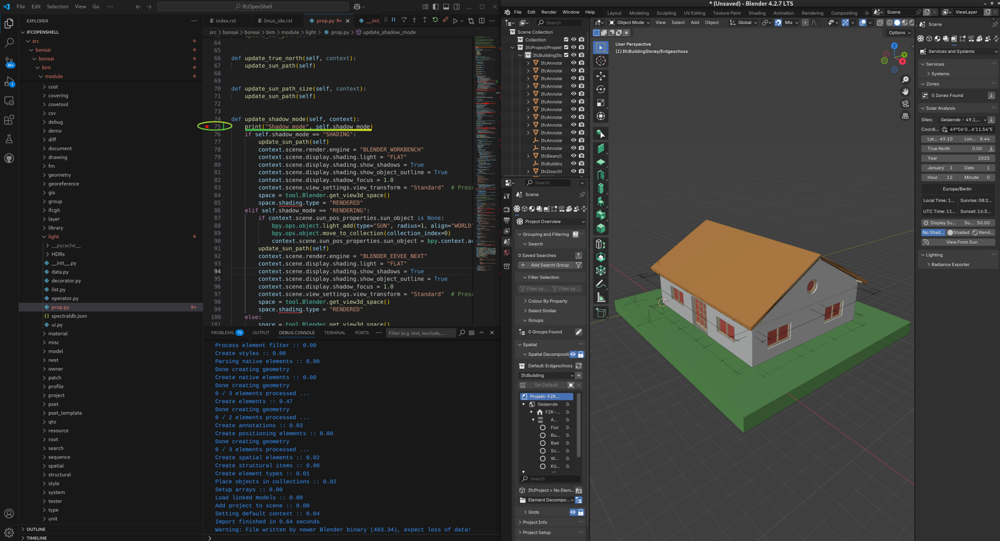In Blender. Go To SOLAR ANALYSYS Tool in Bonsai and Click in “No Shadow”, “Shaded” or “Rendered”
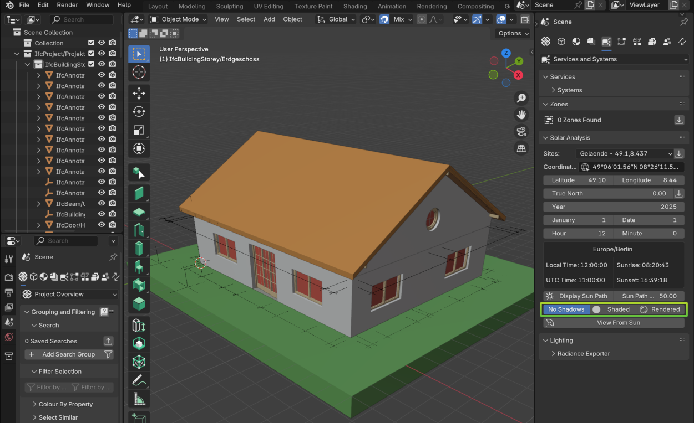This will trigger the break-point. See how the execution is stopped at the break-point.
Click in the debugging tools the option for “step over” (F10).
You can see the print statement executed and the output in the VSCode internal terminal.
From here you can watch the local variables, global variables, add watches, check the stack, etc. Resume execution or move step by step to see how the code is executed.
CONGRATULATIONS! You have now a development environment ready to explore the Bonsai code and contribute to the project.
Make changes and do a Pull Request to the project: In the previous steps we got a complete IDE to explore and make changes to the Bonsai sourcecode. In this step we will provide a simple workflow of using Git commands within VSCode to make changes and do a Pull Request to the project. Bonsai changes very fast so our cloned repository will be outdated very soon. We propose to do the following:
Check in our GitHub page if our project fork (https://github.com/falken10vdl/IfcOpenShell) is outdated compared to the IfcOpenShell main branch (https://github.com/IfcOpenShell/IfcOpenShell).
Sync our fork with the upstream branch (if needed).
Pull the changes in our porject fork to our local repository (/home/falken10vdl/bonsaiDevel).
Create a new branch in our local repository (example: DOC_QS_IDE)
Publish the branch to our project fork in GitHub.
Make changes in the code.
Commit the changes.
Push the changes to our project fork.
Create a Pull Request to the upstream main branch of the IfcOpenShell project.
Letis see below the steps with an example of changing the documentation of the Quickstart guide for the IDE in Linux.
Check in our GitHub page if our project fork is outdated. Click Update branch
After clicking Update branch our fork is up to date with the upstream main branch.
Pull the changes in our porject fork to our local repository
Create a new branch in our local repository by clicking in the current branch name in the bottom left corner of the VSCode window. Give a name to the branch and press Enter.
The new branch is created and we can see it in the bottom left corner of the VSCode window.
Publish the branch to our project fork in GitHub by clicking in the publish button (little cloud with up arrow) in the bottom left corner of the VSCode window. Select as origin the project fork.
Check that the branch is now in our project fork in GitHub.
Make changes in the code. In this case we will change documentation by adding a Quickstart for the IDE in Linux. :)
Note
Bonsai uses “Black” as the code formatter. You can install it by running the following command in the terminal:
python3.11 -m pip install black
Please make sure that before you commit the changes you run the following command in the terminal in the IfcOpenShell root folder:
black .Commit the changes. First provide your user name and email to Git.
Then commit the changes by clicking in the check mark in the Source Control tool.
Accept the staging of the changes prior to commit.
Push the changes to our new branch in the github project fork.
Check that the changes are in the project fork in GitHub. You can see that the directory ide has been added, for example.
Create a Pull Request to the upstream main branch of the IfcOpenShell project. Go to your GitHub page and you will see that the new branch has 1 commit ahead of the upstream main branch. Click in the Compare & pull request button.
Verify that the changes are correct, add a description and click in the Create pull request button.
Note
If you need to update the Pull Request with new changes, you can do it by making the changes in the local repository and then commit and push them to the same branch. The Pull Request will be updated automatically. You can also add comments to the Pull Request to explain the changes made.
Warning
Sometimes the process of changing the initial code for the Pull Request takes enough time that already the upstream main branch has changed significately. This means that a direct merge to the upstream branch is not possible without conflicts. In this case you will need to rebase the Pull Request branch with the upstream main branch.This takes all your commits from the current PR branch and reapplies them one by one on top of the latest commits in the target branch (which should be the upstream main branch). This is a bit more complex process and you can refer to the Using Git source control in VS Code for more information.
CONGRATULATIONS! You have now made a change in the Bonsai project and created a Pull Request to the main branch of the project. Happy coding and documenting!
Test someone else’s Pull Request: Ofen times you want to provide feedback to someone else’s Pull Request. A simple way to do this is by using the GitHub Pull Request extension in VSCode. Please refer to GitHub Pull Requests in Visual Studio Code for more information.
This will fetch the branch of the Pull Request and you will be able to test it as if you had created your own branch.
You can also use the GitHub Pull Request extension to review the Pull Request and provide comments. And of course the rest of the VSCode functionality to test, debug, improve, etc. the code.
CONGRATULATIONS! and happy testing!
{kind=link}
{kind=link}
{kind=link}
{kind=link}
{kind=link}
{kind=link}
{kind=link}
{kind=link}
{kind=link}
{kind=link}
{kind=link}
{kind=link}
{kind=link}
{kind=link}
{kind=link}
{kind=link}
{kind=link}
{kind=link}
{kind=link}
{kind=link}
{kind=link}
{kind=link}
{kind=link}
{kind=link}
{kind=link}
{kind=link}
{kind=link}
{kind=link}
{kind=link}
{kind=link}
{kind=link}
{kind=link}
{kind=link}
{kind=link}
{kind=link}
{kind=link}
{kind=link}
{kind=link}
{kind=link}
{kind=link}
{kind=link}
{kind=link}
{kind=link}
{kind=link}
{kind=link}
{kind=link}
{kind=link}